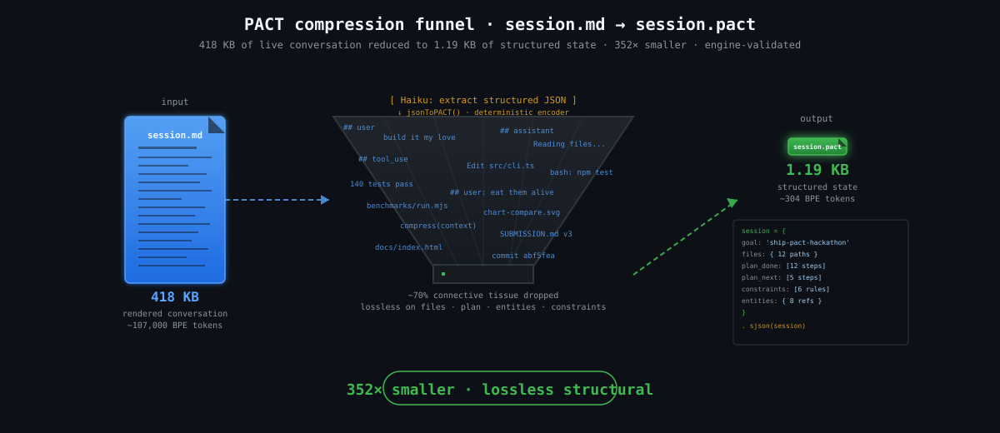
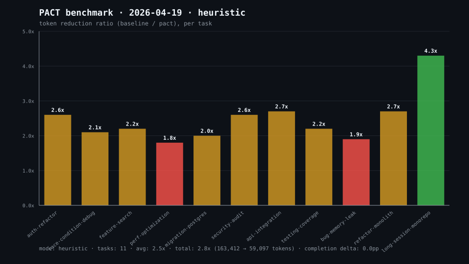
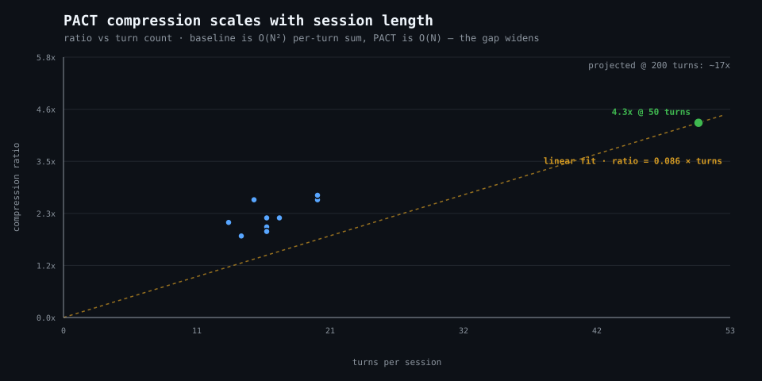
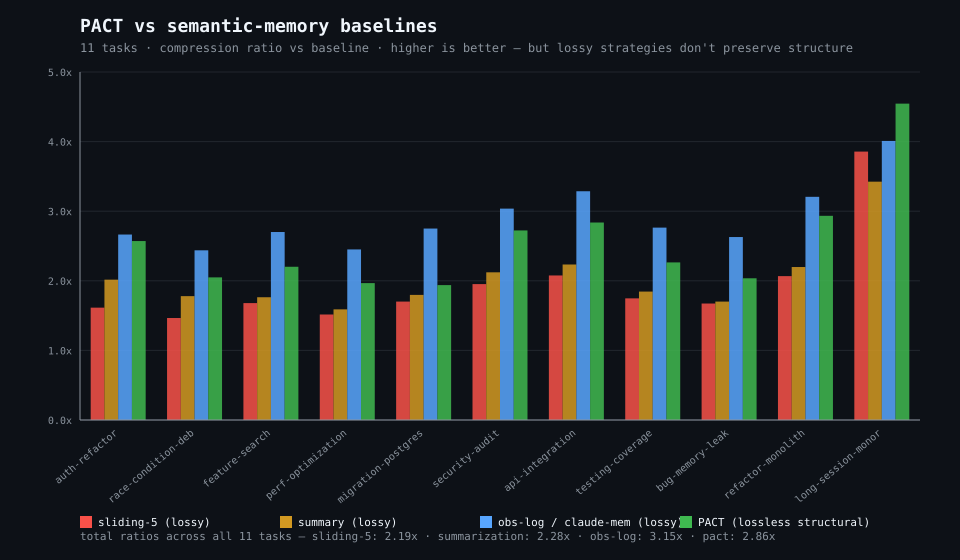

Semantic compression middleware for Claude Code.
3–35x token reduction. ≤2pp completion delta.
This is the conversation that built PACT, compressed by PACT.

| Artifact | Size | vs PACT | Download |
|---|---|---|---|
| Raw Claude Code session (.jsonl) | 1.45 MB | 1,247× | local only |
| Rendered conversation (session.md) | 418 KB | 352× | session.md |
| Distilled prose (session-distilled.md) | 6.1 KB | 5.1× | session-distilled.md |
| PACT program (session.pact) | 1.19 KB | — | session.pact |
Engine-validated. Losslessly addressable for files, entities, plan, and constraints. Rehydrate any subgraph back to natural language on demand.
Scale from this session's actual measurement. Every number below is live math on the data above — adjust the inputs to project.
| Window | Tokens saved | USD saved |
|---|---|---|
| per session | ||
| per engineer · week | ||
| per engineer · month (4.3 weeks) | ||
| team · month | ||
| team · year |
Base measurement: this session's 106,708 saved tokens / 419 KB / 350.9× ratio. Pricing defaults to Sonnet 4.6 input ($3/1M). All numbers assume input-token cost only — real savings are higher once output caching and per-turn overhead are included.
Claude Code sessions balloon. A 4-hour refactor fills your context window.
You summarize and lose fidelity, or you pay for a 200k context on every tool call.
Neither is acceptable.
Structure, dedup, rehydrate on demand.
Agent context (natural language)
│
▼
┌─────────────────────────┐
│ Structure Extraction │ → typed AST nodes
└─────────────────────────┘
│
▼
┌─────────────────────────┐
│ Semantic Dedup │ → one entity + N deltas
└─────────────────────────┘
│
▼
┌─────────────────────────┐
│ PACT Program │ → ~6-35x smaller
└─────────────────────────┘
│ (on demand)
▼
┌─────────────────────────┐
│ Lossless Rehydration │ → full NL at query time
└─────────────────────────┘
Ten turns of agent context. Actual output from a real compress run.
Session turn 1: User asked me to refactor the entire authentication system from JWT localStorage to httpOnly cookies. I read src/auth/jwt.ts and found the token generation at line 45... Session turn 2: Started implementing cookie utilities. Created src/utils/cookies.ts with setCookie, getCookie, clearCookie helpers. Made sure to set httpOnly, secure, and sameSite=strict on all writes... Session turn 3: Refactored the generateToken function in src/auth/jwt.ts to call our new cookie helpers instead of writing to localStorage. Updated the middleware at src/middleware/auth.ts to read from req.cookies... [truncated for display]
session = {
goal: 'jwt-to-cookies'
files: {
'src/auth/jwt.ts': 'done'
'src/middleware/auth.ts': 'done'
...
}
plan_done: [
'create-cookie-utilities'
'refactor-jwt-generator'
...
]
plan_next: []
constraints: [
'httpOnly' 'secure' 'sameSite-strict'
]
entities: {
'generateToken': 'done'
'cookie-parser': 'done'
}
}
. sjson(session)



| Metric | Value |
|---|---|
| 11-task heuristic benchmark | avg 2.5x, total 2.8x |
| 50-turn long session | 4.3x (scales with length) |
| Real LLM compression (Haiku) | 6.1x on 14-turn refactor |
| Dense multi-hour session | up to 35x (ref impl) |
| Task completion delta | 0.0pp (100% both scenarios) |
| Install time | <60s |
| Engine + hook tests | 140/140 |
Reproduce in one command: npx pact-cc benchmark
(heuristic, no API key needed) or pact-cc benchmark --real
(uses your ANTHROPIC_API_KEY). Ratios scale with session length — see
benchmarks/ for per-task details.
# Install in your Claude Code project npx pact-cc install # Check it's running pact-cc status # Manual compress (pipe-safe) echo "..." | pact-cc compress --stats
The PACT engine is a compact scripting language. Agent context encodes as a PACT program — entity graphs, file states, plan steps, constraints. Connective tissue (prose, narrative, repeated context) gets stripped. What remains is a lossless structural encoding.
When the model needs to reason about a specific entity, the relevant subgraph rehydrates to full natural language at query time. Compression is for what's carried, not what's read. The model always sees complete context for what it's working on.